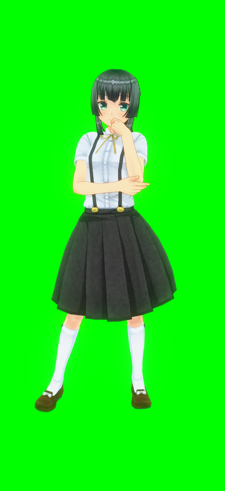

🌸 一果の1号艇・鬼絞り判定所
① 開催場を選択
01 桐生
02 戸田
03 江戸川
04 平和島
05 多摩川
06 浜名湖
07 蒲郡
08 常滑
09 津
10 三国
11 びわこ
12 住之江
13 尼崎
14 鳴門
15 丸亀
16 児島
17 宮島
18 徳山
19 下関
20 若松
21 芦屋
22 福岡
23 唐津
24 大村
② 1号艇 2連対率
70%
③ 1号艇 平均ST
0.15s
④ 1号艇 展示気配
普通
⑤ 2号艇 2連対率 (壁)
50%
⑥ 2号艇 ST (凹み)
0.15s
⑦ その他条件
普通
外に超抜あり
外に超抜複数
追い風強
向かい風強
一果に聞いてみる♪

推定逃げ確率
0%
【1】逃げ判定（ツールの答え合わせ）
逃げた
逃げず
【2】自分予想（実際の収支）
的中！
不的中
🏆 総合・場別分析パネル
0%
🔥 鉄板成功率
(75%以上時)
0%
⚖️ 本命成功率
(60-74%時)
0%
👑 管理人の的中率
(全データ)
0%
👤 自分の的中率
(個人成績)
競艇場
管理人(的中/試行)
自分(的中/試行)
ローカルデータをリセット